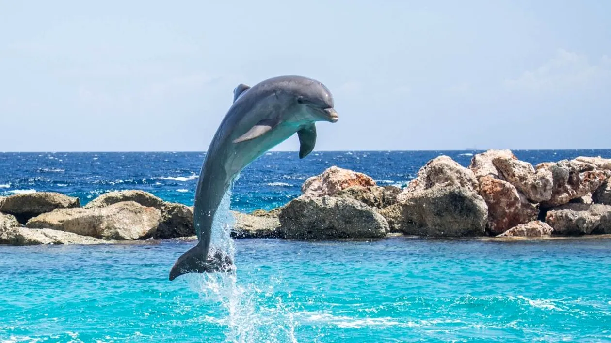
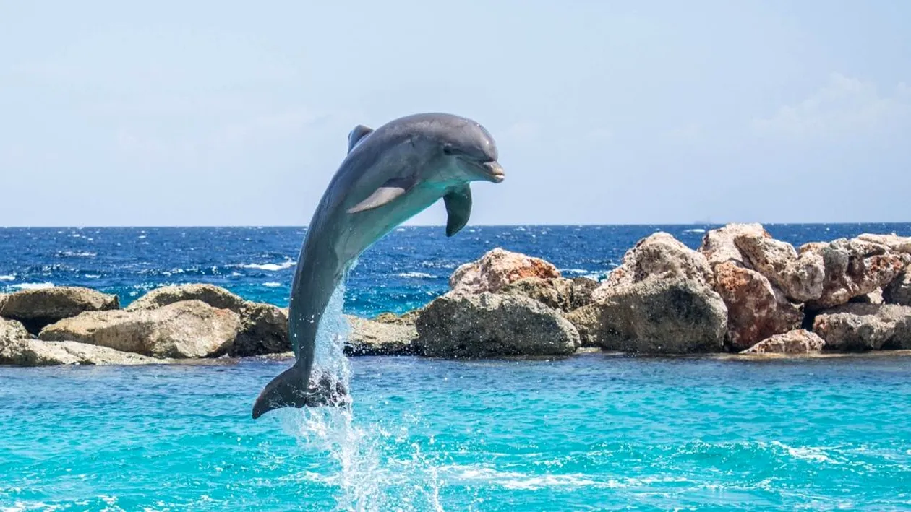

•Curiozitāți
- Marea Neagră are un strat anoxic la adâncimi mai mari de 150-200 de metri, ceea ce înseamnă că aproape 90% din volumul său nu conține oxigen și este saturat cu hidrogen sulfurat, un gaz toxic care împiedică dezvoltarea vieții marine, dar contribuie la conservarea epavelor antice.
- Sturionii din Marea Neagră sunt printre cele mai vechi specii de pești din lume, existând de peste 200 de milioane de ani, însă din cauza pescuitului excesiv pentru caviar, populația lor a scăzut dramatic, iar multe specii sunt acum protejate prin lege.
- Acum aproximativ 7.500 de ani, Marea Neagră era un lac de apă dulce, iar unii cercetători cred că o inundație masivă provocată de pătrunderea apelor din Marea Mediterană prin Strâmtoarea Bosfor ar putea fi la originea legendei despre Atlantida.
Mai jos ți-am pregātit un chestionar cu câteva întrebāri simple pentru a vedea dacā informațiile oferite pe parcursul site-ului au fost clare.
Mult succes!
Mult succes!
Chestionar-Marea Neagrā
Acesta a fost testul despre Marea Neagră! Câte răspunsuri corecte ai obținut? 🌊
 
